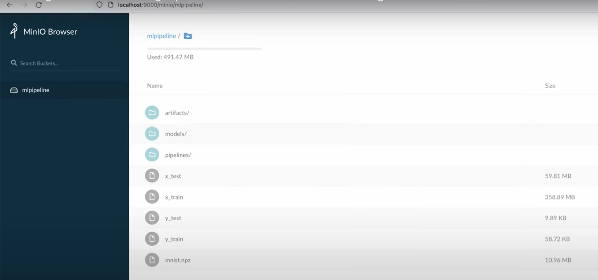

Paddy projects an hour read( About 9678 words)0 visits
How to Configure Kubeflow on AWS EC2 and Deploy a Complete Model Inference Service on KServe in 2024 [Step-by-Step Guide]
Introduction
This blog is mainly on how to deploy Kubeflow on AWS EC2 and create model inference services in Kubeflow. Since some of the tutorials available online seem to be outdated, and it’s common to encounter unexpected and challenging bugs during implementation. This blog will also share some of the pitfalls I’ve encountered, along with solutions for future reviewing and reference.
Create and Configure EC2 instance in AWS console dashboard
We’ll using an EC2 instance to install awscli, eksctl, and other support tools needed to create the EKS Cluster and Install Kubeflow.
Login to the AWS Managment Console go to the AWS EC2 Dashboard
Click on “Launch Instance”
Name and tags Name:
1
kubeflow-cloud-shell
OS Image (Ubuntu preferably, for following apt and other command needed installing):
1
Ubuntu:latest
create your EC2 instance pair-key for following connection and accessing after the instance created
1
pair-key
Instance type
1
t2.micro
Network settings (You could use the default security group if you’ve already added ssh as an inbound rule)
Storage （Bigger SSD storage set-up are better for avoiding unexpected and difficult debugging bugs on the following process of creating EKS cluster and its nodes-group）
1
SSD:30GB, EBS:gp3 volumes
After setting up, review and launch your EC2 instance!
Connect and access your EC2 instance!
There are three different ways to do that
The first one is pretty simple and easy. Just press the connect button on the EC2 dashboard, after navigate to launch page, press the launch button directly if you are fine with the default setting.
Using ssh command (if you save the pair-key format as .pem, or you could use PuTTYgen to convert your pair-key from .ppk to .pem format. And there also is a tutorial about how to implement it! )
1 2 3
# open your Linux env bash terminal # assume pwd is the directory you run ssh command from ssh -i <pair-key.pem> ubuntu@ec2-<your-ec2-public-ipv4-DNS>
Using PuTTY
1 2 3 4 5 6 7 8
# open your PuTTy dashboard ├── Session/ │ └── Logging/ # fill out <hostname(ip-address): ubuntu@ec2-<public-ipv4-DNS> <port:22> <connection-type: SSH> ... └── Connection/ └── SSH/ └── Auth/ # press 'browse' button to add and configure your private key file with .ppk format for auth ...
Firstly, we need to stay the installation and other basic cmd updated
1 2
sudo apt update sudo apt install git curl unzip tar make sudo vim wget -y
It would be better to install Conda for the following package needed installation efficiency, running-environment isolation and the reduction of dependency packages potential conflicts
1 2 3 4 5
# We choose miniconda for lightweight installation and efficiency (Anaconda is also a good choice for flexibility mkdir -p ~/miniconda3 wget https://repo.anaconda.com/miniconda/Miniconda3-latest-Linux-x86_64.sh -O ~/miniconda3/miniconda.sh bash ~/miniconda3/miniconda.sh -b -u -p ~/miniconda3 rm ~/miniconda3/miniconda.sh
And we also need to change the system file ~/.bashrc
1 2 3 4
# edit the ~/.bashrc file using vim, nano etc # adding the command below and save export PATH="$HOME/miniconda3/bin:$PATH"
Back to the terminal, run the cmd below, and restart the terminal to make it work
1
source ~/.bashrc
It now should be able to make the MiniConda work and stay in the ‘base’ mode
1 2
# your temninal be like: (base) [ubuntu:<Your private Ipv4 DNS> ~]$
We Could create and activate an env to set up the following packages needed
1 2 3
# assume env-name is kubeflow_v1 or you could pick a name you happy with # python version 3.8 or above are both acceptable conda create --name kubeflow_v1 python=3.8
And the terminal should be like that after running
1 2
(kubeflow_v1) [ubuntu:<Your private Ipv4 DNS> ~]$
and we use these commands ‘$python3.8$’, ‘which pip3’ and ‘which pip’ to check if they work simply
1 2 3 4 5 6 7 8 9 10 11
$python3.8 # and it should be like that # input 'exit()' to exit python terminal python3.8.x ...... >>> >>> exit() $ $which pip /usr/bin/pip $which pip3 /user/bin/pip3
Alright, time for installing the main part of kubeflow: the latest and compatible Kubeflow and AWS release versions are showed below, you could also replace the tag KUBEFLOW_RELEASE_VERSION and AWS_RELEASE_VERSION with one you happy with. There is also an instruction about how to choose the releases and versions
Make sure the terminal stay in the kubeflow-manifests directory and install tools needed from Makefile
1 2
# it should be like: (kubeflow_v1) [ubuntu:<Your private Ipv4 DNS> kubeflow-manifests]$
1
$make install-tools
After that, it might throw an exception about fail to install python3.8, but we could ignore it safely since we have get the python3.8 env configured and run the following command to continue to install the ones to be installed
1
$ make install-python-packages
For more info about why the error happened, we could dive into the Makefile to check it out
Since it seems to be showing exception apt:python3.8 package not found sometimes, we have configured env python3.8 and pip package so could feel free to ignore it.
Finally, ensure the packages below installed completely after run ‘make install-tools’
AWS CLI - A command line tool for interacting with AWS services.
eksctl - A command line tool for working with EKS clusters.
kubectl - A command line tool for working with Kubernetes clusters.
Configure AWS credentials, regions and deploy AWS EKS cluster, node-group
For aws credentials config, you might need set up IAM credential to get your AWS account access key and secret key. Follow AWS CLI Configure Quickstart documentation to setup your IAM credentials.
After getting the two keys, configure the AWS creds and regions for further EKS deployments
1 2 3 4 5 6 7 8 9
aws configure --profile=kubeflow # AWS Access Key ID [None]: <enter access key id> # AWS Secret Access Key [None]: <enter secret access key> # Default region name [None]: <AWS region> # Default output format [None]: json
# Set the AWS_PROFILE variable with the profile above export AWS_PROFILE=kubeflow
Once your configuration is complete, run ’aws sts get-caller-identity’ to verify that AWS CLI has access to your IAM credentials. And it should be fine if nothing error happened even though there is nothing print-out.
Configure your EKS cluster_name, region:
1 2 3 4
# cluster_name 'kubeflow' is just used for example export CLUSTER_NAME=kuebflow # us-east-1 is just used for example, please change that if it is not according to your account region export CLUSTER_REGION=us-east-1
Then we create EKS cluster and its node-group for kubeflow deployment.
1
make create-eks-cluster
If you want to set up your own EKS cluster and node-group (EKS version,Nodes_number etc), please use the eksctl command to finish the set-up for reference.
Generally, it may take just a few minutes to finish up.
But sometimes,unexpectedly,you might encounter the issue like still waiting for AWS ***cloudFormation*** creating cluser <cluster_name>still waiting for ***cloudFormation*** creating node-group <node_group_name> after waiting for a long time and even throw an TimeOut error sometimes. And the related blocks in AWS cloudFormation might show ROLL_BACK_Failed in status. One of the possible and simplest solutions is just accessing cloudFormation, deleting the block with the same name, and try it again.
Lastly,after it finish up, we use awscli and kubectl to check if the cluster and its node-group status is active and all fine(And in fact, it is likely to be working normally once the installation done)
# locate the following line in the file docker pull gcr.io/arrikto/kubeflow/oidc-authservice:e236439 # and replace it with the new docker file addr docker pull docker.io/kubeflowmanifestswg/oidc-authservice:e236439
Otherwise it will result in oidc-authservice pod installation failed.
We need to install AWS EBS CSI driver for the EKS cluster created from accessing the AWS EKS dashboard add-ons. Otherwise it will result in the following pods installation failed like my-sql,minio pods etc with kubeflow-pipeline namespaces. Please reference the tutorial to configure it.
After that, let us go back to the kubeflow-manifests directory and install the Kubeflow Pods needed.
1
make deploy-kubeflow INSTALLATION_OPTION=helm DEPLOYMENT_OPTION=vanilla
It should take up just a few mins. If the installation process get stuck in some pods deployment like oidc-authservice, kubeflow-pipeline etc from observing the print-out for a long time (like 5mins or above) and throw the timeout error constantly, please use CTRL+C to interrupt the installation, go back and check if the preparation work is all-set above and try again.
Finally, use the kubectl cmd below to check if all pods are all-set
1 2 3 4 5 6 7
kubectl get pods -n cert-manager kubectl get pods -n istio-system kubectl get pods -n auth kubectl get pods -n knative-eventing kubectl get pods -n knative-serving kubectl get pods -n kubeflow kubectl get pods -n kubeflow-user-example-com
And there also are some useful commands to help debug and config the pods fail to work
1 2 3 4 5 6 7 8 9 10 11 12
# get all pods info, especially getting their names for debugging kubectl get pods --all-namespaces # check the pod info kubectl describe pod <pod_name> -n <namespace> # check the pod logs kubectl logs <pod_name> -n <namespace> # once your figure the bug out, change the StatefulSet(pod controller used) set-up yaml of the pod # and use the cmd below to get the StatefulSet name of the pod kubectl get pod <pod_name> -n <namespace> -o jsonpath='{.metadata.ownerReferences[*].name}' # then edit (it'll open the vim ediot automatically if installed) kubectl edit statefulset <statefulset_name> -n <namespace> # after editing and saving, exit the vim editor, it'll apply the change automatically
If it’s all going well,it’s time to connect the Kubeflow dashboard
Connect the Kubeflow Dashboard
1 2 3 4 5 6
make port-forward
# or you could change the port number if port：8080 in your local machine get occupied by other services $(eval IP_ADDRESS:=127.0.0.1) $(eval PORT:=8080) kubectl port-forward svc/istio-ingressgateway --address $(IP_ADDRESS) -n istio-system $(PORT):80
and open another terminal to establish the connection
1 2
#assume pwd is the directory you run ssh command from ssh -i <pair-key.pem> -L 8080:localhost:8080 -N ubuntu@ec2-<your-ec2-public-ipv4-DNS>
go to the browser and input username: user@example.com and password: 12341234
It’s advised that change the plain text password as hash one for security
1 2 3
#this command will convert your plain text password input to hash formation by using bcrypt packages python3 -c 'from passlib.hash import bcrypt; import getpass; print(bcrypt.using(rounds=12, ident="2y").hash(getpass.getpass()))'
then edit upstream/common/dex/base/config-map.yaml and fill the relevant field with the hash one you chose:
# access-kfp-from-notebooks.yaml apiVersion: kubeflow.org/v1alpha1 # Specify the API version to interact with Kubeflow kind: PodDefault # This is a PodDefault object used to define default settings metadata: name: access-ml-pipeline # Give this PodDefault a friendly name namespace: kubeflow-user-example-com # kubeflow defalut namespace spec: desc: Allow access to Kubeflow Pipelines # Describe the purpose of this PodDefault selector: matchLabels: access-ml-pipeline: "true"# Select Pods with this label to apply these default settings volumes: - name: volume-kf-pipeline-token # Define a name for the volume projected: # Use a projected volume to include content from multiple sources sources: - serviceAccountToken: # Obtain a token from the service account path: token # Path where the token will be stored in the volume expirationSeconds: 7200 # Set the token's validity period to 2 hours, change that for longer period if u want audience: pipelines.kubeflow.org # Specify the audience for the token as Kubeflow Pipelines volumeMounts: - mountPath: /var/run/secrets/kubeflow/pipelines # Specify the path where the volume will be mounted in the Pod name: volume-kf-pipeline-token # Name of the volume being mounted readOnly: true# Set the volume to read-only to protect the data env: - name: KF_PIPELINES_SA_TOKEN_PATH # Set an environment variable to point to the token path value: /var/run/secrets/kubeflow/pipelines/token # The value of this environment variable
and apply the change by using kubectl cmd
1
kubectl apply -f access-kfp-from-notebooks.yaml
then go to Kubeflow Notebooks dashboard and spin up a new notebook server for deploying our models on Kserve
1 2 3 4 5 6 7 8 9 10 11
# config # or change them witgh set-ups you happy with Name=kubeflow_v1 # configure the docker_image you happy with for env and package dependencies Docker_image=public.ecr.aws/j1r0q0g6/notebooks/notebook-servers/jupyter-tensorflow-full:v1.5.0 CPU=2, RAM=4GiB GPU=1， GPU Vendor=NVIDIA Workspace_volume=default
# please set up this config Configurations=allow access to Kfp Pipelines
after creating, we need to set up MinIO to manage our working data
Setup MinIO for Object Storage
we need another two terminal to deal with that, one for forwarding the MinIO pod’s port to the local port and the other one for making connection with the local port on local machine to access MinIO service
In the first one, using kubectl cmd to forward the port
1 2 3
# you can also change the <local-port: 9000> as you want if it is occupied kubectl port-forward -n kubeflow svc/minio-service <local-port>:<pod-port> kubectl port-forward -n kubeflow svc/minio-service 9000:9000
considering We need MinIO username and password to access MinIO dashboard for more info, which are minio and minio123 separately，and just for sure, We can also access them by using kubctl cmd:
1 2 3 4
# get accesskey (username) kubectl get secret mlpipeline-minio-artifact -n kubeflow -o jsonpath="{.data.accesskey}" | base64 --decode # get secretkey (password) kubectl get secret mlpipeline-minio-artifact -n kubeflow -o jsonpath="{.data.secretkey}" | base64 --decode
and it’s advised to change the default username and password for security. One Tutorial for reference.
Alright in the second one, using ssh cmd to connect
access ***localhost:9000*** in your local machine browser, enter the username and password. Now you should be able to see the MinIO dashboard like that:

And then, we go ahead and start to deploy the kserve for inference service
Setting up MinIO secret for Kserve for inference service
We need to apply this yaml file below so that the working data(train_dataset, models etc) which will be saved on minIO can be accessed by Kserve. Kserve could copy the model to be saved in the newly created inference container.
# apply-minio-secret-to-kserve.yaml apiVersion: v1 kind: Secret metadata: name: minio-kserve-secret # Name of the secret for accessing MinIO. namespace: kubeflow-user-example-com # Namespace where this secret is located. annotations: serving.kserve.io/s3-endpoint: "minio-service.kubeflow:9000"# Specifies the S3 endpoint for MinIO service. serving.kserve.io/s3-usehttps: "0"# Indicates that HTTPS is not used (0 means false). serving.kserve.io/s3-useanoncredential: "false"# Denotes that anonymous credentials are not used (false means credentials are required). type: Opaque # Type of the secret, indicating it's in plain text format. stringData: AWS_ACCESS_KEY_ID: "minio"# AWS access key ID for authentication. AWS_SECRET_ACCESS_KEY: "minio123"# AWS secret access key for authentication. --- apiVersion: v1 kind: ServiceAccount metadata: name: sa-minio-kserve # Name of the service account for MinIO access. namespace: kubeflow-user-example-com # Namespace where this service account is created. secrets: - name: minio-kserve-secret # Associates the service account with the MinIO secret created earlier.
After that, we start to deploy our models to Kserve from MinIO to check if the changes above work and get the inference service started.
Deploy models on Kserve inference services
There are five ways to deal with that, first and second one would be a good choice for quick-start, and the third one have enough advantages on developing and debugging by using the most common component of Kubeflow, which is Kubeflow pipelines(Kfp). The fourth and fifth one are using argo workflow and tekton separately. Argo workflow is famous by its DAG, flexible execution flow and task reusability. Tekton is known by its structured pipeline and strong CI/CD integration. And We will use one of my LSTM models for the demo. For more info about the model, please access the project:Time Series Forecasting(LSTM)
Using GitHub
In the first method, We will be using the model uploaded on GitHub mainly and a few funcs from kfp components packages to deploy kserve inference services
Since we have configured the connection to Kubeflow Jupyter notebooks server before, let’s create one new ipynb file with python kernel.
In the new file, clone the repo and take the model directory
def model_serving(): """ Create kserve instance """ from kubernetes import client from kserve import KServeClient from kserve import constants from kserve import utils from kserve import V1beta1InferenceService from kserve import V1beta1InferenceServiceSpec from kserve import V1beta1PredictorSpec from kserve import V1beta1TFServingSpec
(access Run in Kubeflow central board menu panel and checkout the logs if the inference endpoint have not been set up correctly or there are other bugs)
then make a request to test the inference service.
Before that, We need some functions from my model project to get the inputs in tf.tensor for the inference input
import os import pandas as pd import zipfile import tensorflow as tf
def getDataset():
""" Downloads and extracts a CSV dataset from a remote ZIP file, processes the data, and returns a DataFrame and a Series. The function performs the following steps: 1. Downloads a ZIP file containing the dataset from a specified URL. 2. Extracts the ZIP file into the current working directory. 3. Reads the CSV file from the extracted contents into a DataFrame. 4. Processes the DataFrame by slicing it to include every 6th row starting from the 5th row and converting the 'Date Time' column to datetime objects. 5. Cleans up by removing the ZIP file and extracted CSV file. Returns: df (pd.DataFrame): Processed DataFrame containing the dataset with every 6th row. date_time (pd.Series): Series containing datetime objects converted from the 'Date Time' column. Raises: KeyError: If the 'Date Time' column is not found in the CSV file. """
class WindowGenerator(): def __init__(self, input_width, label_width, shift, train_df, val_df, test_df, label_columns=None): # Store the raw data. self.train_df = train_df self.val_df = val_df self.test_df = test_df
# Work out the label column indices. self.label_columns = label_columns if label_columns is not None: self.label_columns_indices = {name: i for i, name in enumerate(label_columns)} self.column_indices = {name: i for i, name in enumerate(train_df.columns)}
# Work out the window parameters. self.input_width = input_width self.label_width = label_width self.shift = shift
@property def example(self): """Get and cache an example batch of `inputs, labels` for plotting.""" result = getattr(self, '_example', None) if result is None: # No example batch was found, so get one from the `.train` dataset result = next(iter(self.train)) # And cache it for next time self._example = result return result
if self.label_columns: label_col_index = self.label_columns_indices.get(plot_col, None) else: label_col_index = plot_col_index
if label_col_index is None: continue plt.scatter(self.label_indices, pred_tensor[n, :, label_col_index], marker='X', edgecolors='k', label='Predictions', c='#ff7f0e', s=64)
if n == 0: plt.legend()
plt.xlabel('Time [h]') plt.show()
def split_window(self, features): inputs = features[:, self.input_slice, :] labels = features[:, self.labels_slice, :] if self.label_columns is not None: labels = tf.stack( [labels[:, :, self.column_indices[name]] for name in self.label_columns], axis=-1)
# Slicing doesn't preserve static shape information, so set the shapes # manually. This way the `tf.data.Datasets` are easier to inspect. inputs.set_shape([None, self.input_width, None]) labels.set_shape([None, self.label_width, None])
after getting inputs tensor, We change the tensor format as list for inference input and make an request to the endpoint deployed with the list. And we use the plot function to plot the response data got back from the endpoint. And the pic is like:
Using Docker
In the second method, we use docker to implement it will be similar to the first one
# Exec the container and check out the model dir result = container.exec_run("ls /path/to/your/model") print(result.output.decode())
# Copy the model dir to the expected dir in the Jupyter server container.copy("my_container:/path/to/your/model", "/local/path/to/save/model")
# Stop and delete container container.stop() container.remove()
and then repeat the steps in the first method to deploy the kserve inference service
Using Kubeflow pipeline(kfp)
In the third method, we use kfp component fully to finish the most of MLOps including data_ingestion, pretrain_model, model_fit_train and the kserve inference service deployment，these 4 phases. And the implementing code will be similar to method one about data_ingestion and pretrain_model phases.
Here is the code showing complete process of the phases and testing on Kfp
""" Downloads and extracts a CSV dataset from a remote ZIP file, processes the data, and returns a DataFrame and a Series. The function performs the following steps: 1. Downloads a ZIP file containing the dataset from a specified URL. 2. Extracts the ZIP file into the current working directory. 3. Reads the CSV file from the extracted contents into a DataFrame. 4. Processes the DataFrame by slicing it to include every 6th row starting from the 5th row and converting the 'Date Time' column to datetime objects. 5. Cleans up by removing the ZIP file and extracted CSV file. Returns: df (pd.DataFrame): Processed DataFrame containing the dataset with every 6th row. date_time (pd.Series): Series containing datetime objects converted from the 'Date Time' column. Raises: KeyError: If the 'Date Time' column is not found in the CSV file. """
history = model.fit(window.train, epochs=20, validation_data=window.val, callbacks=[early_stopping]) returnhistory import numpy as np import matplotlib.pyplot as plt
class WindowGenerator(): def __init__(self, input_width, label_width, shift, train_df, val_df, test_df, label_columns=None): # Store the raw data. self.train_df = train_df self.val_df = val_df self.test_df = test_df
# Work out the label column indices. self.label_columns = label_columns if label_columns is not None: self.label_columns_indices = {name: i for i, name in enumerate(label_columns)} self.column_indices = {name: i for i, name in enumerate(train_df.columns)}
# Work out the window parameters. self.input_width = input_width self.label_width = label_width self.shift = shift
@property def example(self): """Get and cache an example batch of `inputs, labels` for plotting.""" result = getattr(self, '_example', None) if result is None: # No example batch was found, so get one from the `.train` dataset result = next(iter(self.train)) # And cache it for next time self._example = result return result
if self.label_columns: label_col_index = self.label_columns_indices.get(plot_col, None) else: label_col_index = plot_col_index
if label_col_index is None: continue if not pred_tensor is None: plt.scatter(self.label_indices, pred_tensor[n, :, label_col_index], marker='X', edgecolors='k', label='Predictions', c='#ff7f0e', s=64)
if n == 0: plt.legend()
plt.xlabel('Time [h]') plt.show()
def split_window(self, features): inputs = features[:, self.input_slice, :] labels = features[:, self.labels_slice, :] if self.label_columns is not None: labels = tf.stack( [labels[:, :, self.column_indices[name]] for name in self.label_columns], axis=-1)
# Slicing doesn't preserve static shape information, so set the shapes # manually. This way the `tf.data.Datasets` are easier to inspect. inputs.set_shape([None, self.input_width, None]) labels.set_shape([None, self.label_width, None])
return inputs, labels
def make_dataset(self, data): if not isinstance(data, np.ndarray): data = np.array(data, dtype=np.float32) ds = tf.keras.utils.timeseries_dataset_from_array( data=data, targets=None, sequence_length=self.total_window_size, sequence_stride=1, shuffle=True, batch_size=32,)
for local_file in glob.glob(local_path + '/**'): local_file = local_file.replace(os.sep, "/") # Replace \ with / on Windows if not os.path.isfile(local_file): upload_local_directory_to_minio( local_file, bucket_name, minio_path + "/" + os.path.basename(local_file)) else: remote_path = os.path.join( minio_path, local_file[1 + len(local_path):]) remote_path = remote_path.replace( os.sep, "/") # Replace \ with / on Windows minio_client.fput_object(bucket_name, remote_path, local_file) def train_model() minio_client.fget_object(minio_bucket,"models/lstm/train","dataframes/train.npy") minio_client.fget_object(minio_bucket,"models/lstm/test","dataframes/test.npy") minio_client.fget_object(minio_bucket,"models/lstm/val","dataframes/val.npy") train_npy = np.load('dataframes/train.npy') test_npy = np.load('dataframes/test.npy') val_npy = np.load('dataframes/val.npy') multi_window = WindowGenerator( input_width=24, label_width=24, shift=24, train_df=train_npy,val_df=val_npy,test_df=test_npy, label_columns=None) multi_lstm_model = tf.keras.Sequential([ # Shape [batch, time, features] => [batch, lstm_units]. # Adding more `lstm_units` just overfits more quickly. tf.keras.layers.LSTM(32, return_sequences=False), # Shape => [batch, 24*features]. tf.keras.layers.Dense(24*14, kernel_initializer=tf.initializers.zeros()), # Shape => [batch, out_steps, features]. tf.keras.layers.Reshape([24, 14]) ]) _ = compile_and_fit(multi_lstm_model, multi_window) tf.saved_model.save(multi_lstm_model,'models/lstm/model_dir') upload_local_directory_to_minio("models/lstm/model_dir",minio_bucket,"/models/lstm/model_dir/") import kfp import kfp.components as components
def model_serving(): """ Create kserve instance """ from kubernetes import client from kserve import KServeClient from kserve import constants from kserve import utils from kserve import V1beta1InferenceService from kserve import V1beta1InferenceServiceSpec from kserve import V1beta1PredictorSpec from kserve import V1beta1TFServingSpec
In the fourth method, We will be using argo workflows to spin up the kserve inferenece service and evaluate the model from the response after requesting to the endpoint deployed. Reference the tutorial for more info on argo installation
!git clone https://github.com/PaddyZz/Time_Series_Forecasting.git !cd my-lstm-repo-dir/.../argo #build a docker container for env and dependencies required #dockerfile FROM python:3.10.2 RUN pip install virtualenv RUN virtualenv /env ENV VIRTUAL_ENV=/env ENV PATH="$VIRTUAL_ENV/bin:$PATH" WORKDIR ['/argo','/models/lstm'] # set it up for model_save path COPY . /argo RUN python -m pip install --no-cache-dir -r requirements.txt CMD ["python", "main.py"]
#requirements.txt includes all the dependencies we need to build the other conatiners in argo workflow IPython==7.34.0 matplotlib==3.7.1 numpy==1.26.4 pandas==2.1.4 seaborn==0.13.1 tensorflow==2.17.0 pickle minio glob kserve=0.8.0.1 kfp
#build and push to docker repo for following deployment import docker
def build_and_push_image(repo, image_name, tag): """ Builds and pushes a Docker image to a registry. Args: repo: The registry where the image will be pushed. image_name: The name of the image. tag: The tag for the image. """
client = docker.from_env() # Create a Docker client
# Build the image try: client.images.build(path='.', tag=f"{repo}/{image_name}:{tag}") except docker.errors.BuildError as e: print(f"Build error: {str(e)}")
# Log in to the registry (if necessary) try: client.login(username="<your-username>", password="<your-password>") except docker.errors.APIError as e: print(f"Login error: {str(e)}")
# Push the image to the registry try: for line in client.images.push(f"{repo}/{image_name}:{tag}", stream=True): print(line.decode('utf-8').strip()) except docker.errors.APIError as e: print(f"Push error: {str(e)}")
# Example usage repo = "your_repo" image_name = "your_image" tag = "latest"
#data_ingestion.py import os import pandas as pd import tensorflow as tf import zipfile import pickle
def getDataset(inputs=False):
""" Downloads and extracts a CSV dataset from a remote ZIP file, processes the data, and returns a DataFrame and a Series. The function performs the following steps: 1. Downloads a ZIP file containing the dataset from a specified URL. 2. Extracts the ZIP file into the current working directory. 3. Reads the CSV file from the extracted contents into a DataFrame. 4. Processes the DataFrame by slicing it to include every 6th row starting from the 5th row and converting the 'Date Time' column to datetime objects. 5. Cleans up by removing the ZIP file and extracted CSV file. Returns: df (pd.DataFrame): Processed DataFrame containing the dataset with every 6th row. date_time (pd.Series): Series containing datetime objects converted from the 'Date Time' column. Raises: KeyError: If the 'Date Time' column is not found in the CSV file. """
with zipfile.ZipFile(zip_path, 'r') as zip_ref: zip_ref.extractall(extract_dir) extracted_files = zip_ref.namelist() csv_files = [f for f in extracted_files if f.endswith('.csv')] if csv_files: csv_path = os.path.join(extract_dir, csv_files[0]) df = pd.read_csv(csv_path) if'Date Time'in df.columns: # sliceData df = df[5::6] date_time = pd.to_datetime(df.pop('Date Time'), format='%d.%m.%Y %H:%M:%S') else: raise KeyError("'Date Time' column not found in the CSV file.") if os.path.exists(zip_path): os.remove(zip_path) for file_name in extracted_files: file_path = os.path.join(extract_dir, file_name) if os.path.exists(file_path): os.remove(file_path) if inputs: returndf #we use pickle to sequentilize our data for sharing with other funcs with open('/models/lstm/df.pkl', 'wb') as f: pickle.dump(df, f)
return None
if __name__ == "__main__": getDataset()
#pretrain_model.py import pickle
def splitDataAndNormalization(inputs=False,df=None): if inputs is True and df is not None: pass else: with open('/models/lstm/df.pkl', 'rb') as f: df = pickle.load(f) wv = df['wv (m/s)'] bad_wv = wv == -9999.0 wv[bad_wv] = 0.0
if input is True: return train_df, val_df, test_df with open('/models/lstm/train.pkl', 'wb') as f: pickle.dump(train_df, f) with open('/models/lstm/val.pkl', 'wb') as f: pickle.dump(val_df, f) with open('/models/lstm/test.pkl', 'wb') as f: pickle.dump(test_df, f) return None if __name__ == "__main__":
splitDataAndNormalization()
#model_training import tensorflow as tf import os import glob import pickle import minio from argo.compile_and_fit import compile_and_fit from argo.data_windowing import WindowGenerator
for local_file in glob.glob(local_path + '/**'): local_file = local_file.replace(os.sep, "/") # Replace \ with / on Windows if not os.path.isfile(local_file): upload_local_directory_to_minio( local_file, bucket_name, minio_path + "/" + os.path.basename(local_file)) else: remote_path = os.path.join( minio_path, local_file[1 + len(local_path):]) remote_path = remote_path.replace( os.sep, "/") # Replace \ with / on Windows minio_client.fput_object(bucket_name, remote_path, local_file) def model_train(): with open('/models/lstm/train.pkl', 'rb') as f: train_df = pickle.load(f) with open('/models/lstm/val.pkl', 'rb') as f: val_df = pickle.load(f) with open('/models/lstm/test.pkl', 'rb') as f: test_df = pickle.load(f) multi_window = WindowGenerator( input_width=24, label_width=24, shift=24, train_df=train_df,val_df=val_df,test_df=test_df, label_columns=None) multi_lstm_model = tf.keras.Sequential([ # Shape [batch, time, features] => [batch, lstm_units]. # Adding more `lstm_units` just overfits more quickly. tf.keras.layers.LSTM(32, return_sequences=False), # Shape => [batch, 24*features]. tf.keras.layers.Dense(24*14, kernel_initializer=tf.initializers.zeros()), # Shape => [batch, out_steps, features]. tf.keras.layers.Reshape([24, 14]) ])
_ = compile_and_fit(multi_lstm_model, multi_window) tf.saved_model.save(multi_lstm_model,'/models/lstm/model_dir') upload_local_directory_to_minio("/models/lstm/model_dir",minio_bucket,"/models/lstm/model_dir/") if __name__=="__main__": model_train() #model_serving import kfp import kfp.components as components from kubernetes import client from kserve import KServeClient from kserve import constants from kserve import utils from kserve import V1beta1InferenceService from kserve import V1beta1InferenceServiceSpec from kserve import V1beta1PredictorSpec from kserve import V1beta1TFServingSpec from kfp import dsl import requests
In the final method, we will deploy Tekton simply with yaml file simply and Tekton ‘s deployment method is similar to argo workflow deployment one’s with some additional fine-tunes in yaml file. Reference the tutorial for more info on Tekton installation
using RabbitMQ or Kafka message queue suitable for high concurrency scenarios when deploying Kserve if needed
Thanks for the watching! Hope the blog can help you improve your understanding of how to spin up Kubeflow on AWS EC2 and deploy the KServe inference service!
Conclusion
We have finished: • Create and Configure EC2 instance in AWS console dashboard • Connect and access your EC2 instance • Install basic tools (apt, conda, kubeflow-manifests repo etc) • Configure AWS credentials, regions and deploy AWS EKS cluster, node-group • Install Kubeflow Pods required • Connect the Kubeflow Dashboard • Connect the Kubeflow Notebooks Server • Setup MinIO for Object Storage • Setting up MinIO secret for Kserve for inference service • Deploy models on Kserve inference services